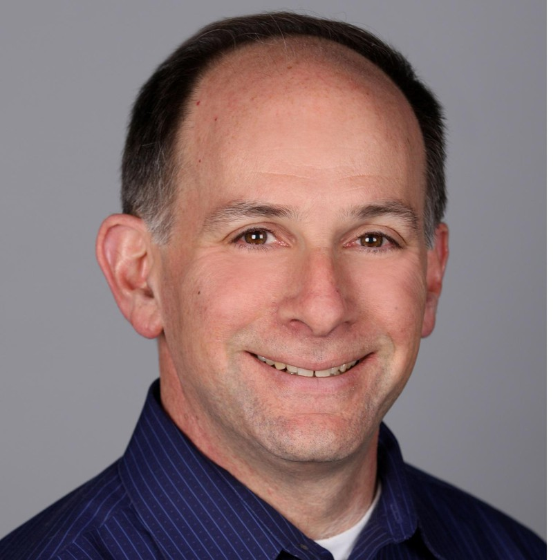
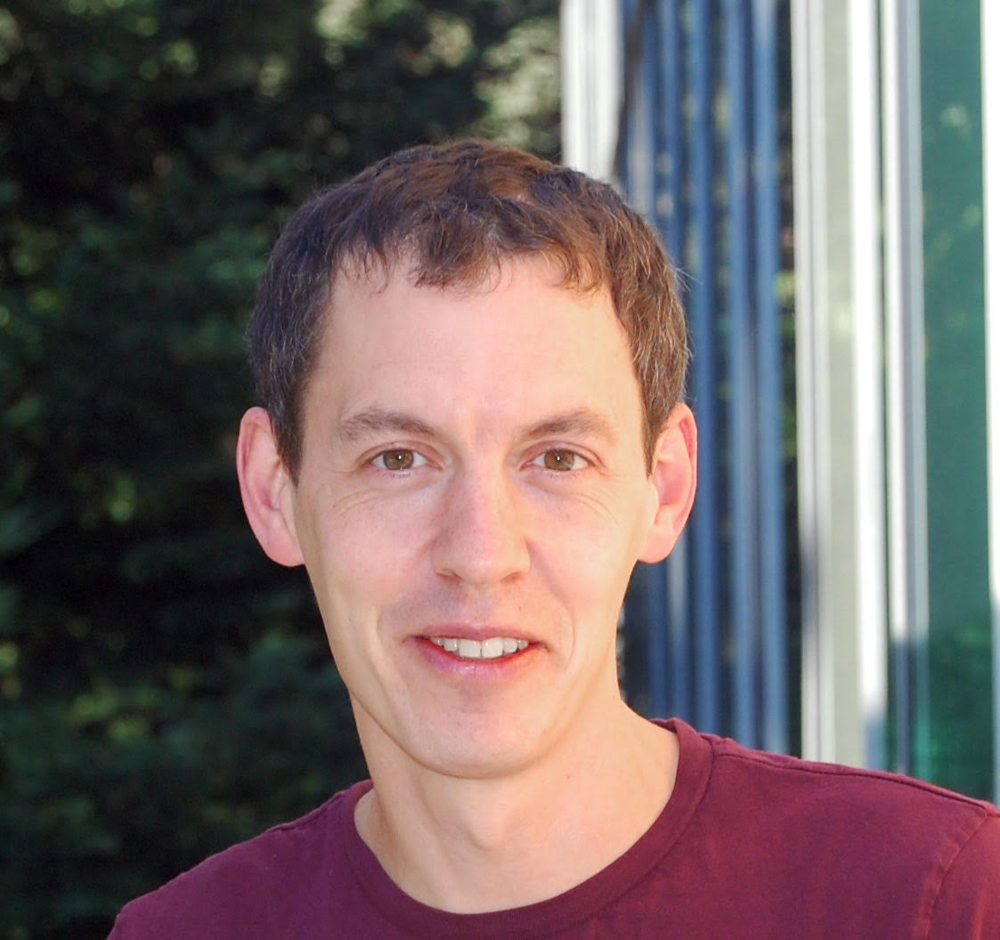
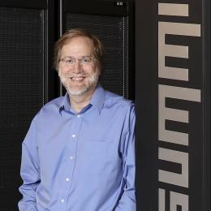

Schedule
| 7:00 - 8:20 | Breakfast |
| 8:20 - 8:30 | Opening Remarks |
| 8:30-9:30 | James Larus, EPFL "Protein Clustering: Parallelizing an Expensive Irregular Computation" |
| 9:30 - 10:00 | Farzaneh Zokaee and Lei Jiang "FindeR: Accelerating FM-Index-based Exact Pattern Matching in Genomic Sequences through ReRAM technology" |
| 10:00 - 10:30 | Coffee break |
| 10:30 - 11:30 | Daniel Jacobson, Oak Ridge National Laboratory
"Exascale Biology: From Genome to Climate with a Few Steps Along the Way" |
| 11:30 - 12:00 | Fan Chen, Linghao Song, Hai Li and Yiran Chen
"PARC: A Processing-in-CAM Architecture for Genomic Long Read Pairwise Alignment using ReRAM" |
| 12:00 - 13:00 | Lunch |
| 13:00 - 14:00 | Benedict Paten, UC Santa Cruz Genomics Institute
"Building the Human Pangenome" |
| 14:00 - 14:30 | Wenqin Huangfu, Xueqi Li, Shuangchen Li, Xing Hu, Peng Gu and Yuan Xie
"MEDAL: Scalable DIMM based Near Data Processing Accelerator for DNA Seeding Algorithm" |
| 14:30 - 15:00 | Coffee break |
| 15:00 - 15:30 | Saransh Gupta, Mohsen Imani, Behnam Khaleghi, Venkatesh Kumar and Tajana Rosing
"RAPID: A ReRAM Processing in-Memory Architecture for DNA Sequence Alignment" |
| 15:30 - 16:00 | Zheming Jin, Kazutomo Yoshii and Hal Finkel
"Optimizing the Performance of the Needleman-Wunsch Benchmark using SYCL" |
| 16:00 - 16:30 | Roman Snytsar and Yatish Turakhia
"Parallel acceleration of ntHash" |
| 16:30 - 17:00 | Chih-Han Yang, Jhih-Wun Zeng, Cheng-Yueh Liu and Shih-Hao Hung
"Accelerating Variant Calling via Performance Analysis and Optimization of DeepVariant" |
| 17:00 - 17:05 | Closing remarks |
Keynote Speakers
-

James Larus, EPFL
"Protein Clustering: Parallelizing an Expensive Irregular Computation"
Short Bio: James Larus is Professor and Dean of the School of Computer and Communication Sciences (IC) at EPFL (École Polytechnique Fédérale de Lausanne). Prior to joining IC in October 2013, Larus was a researcher, manager, and director in Microsoft Research for over 16 years and an assistant and associate professor in the Computer Sciences Department at the University of Wisconsin, Madison. Larus has been an active contributor to numerous communities. He published over 100 papers (with 9 best and most influential paper awards), received over 40 US patents. Larus received a National Science Foundation Young Investigator award in 1993 and became an ACM Fellow in 2006. Larus received his MS and PhD in Computer Science from the University of California, Berkeley in 1989, and an AB in Applied Mathematics from Harvard in 1980.
-

Benedict Paten, UC Santa Cruz Genomics Institute
"Building the Human Pangenome"
Short Bio: Dr. Benedict Paten is an assistant professor in the department of Biomolecular Engineering at the University of California Santa Cruz (UCSC) and an associate director of the UC Santa Cruz Genomics Institute. He directs the Computational Genomics Lab at UCSC, which is broadly focused on computational genomics, creating algorithms, software and services addressing biomolecular challenges. He has a PhD from the University of Cambridge and the European Molecular Biology Laboratory in computational biology.
-

Daniel Jacobson, Oak Ridge National Laboratory
"Exascale Biology: From Genome to Climate with a Few Steps Along the Way"
Short Bio: Dr. Jacobson is the Chief Scientist for Computational Systems Biology at the Oak Ridge National Laboratory. His lab was the first group to break the Exascale barrier and is happy to have done so for a biology project. At present, this (2.41 Exaops) calculation is the fastest scientific calculation ever done anywhere in the world. This project led to his team being awarded the 2018 Gordon Bell Prize (the first ever for Systems Biology).
Dr. Jacobson's career as a computational systems biologist has included leadership roles in academic, corporate, NGO and national lab settings. His lab focuses on the development and subsequent application of mathematical, statistical and computational methods to biological datasets in order to yield new insights into complex biological systems. His lab’s approaches include the use of Network Theory and Topology Discovery/Clustering, Wavelet Theory, and explainable-AI, together with traditional and more advanced supercomputing architectures. Areas of statistics of particular interest to his lab include the use of both frequentist (parametric and non-parametric) and Bayesian methods as well as the development of new methods for Genome-Wide Epistasis Studies (GWES). These mathematical and statistical methods are applied to various population and (meta)multiomics data sets (Genomics, Phylogenomics, Transcriptomics, Proteomics, Metabolomics, Microbiomics, Viriomics, Phytobiomics, Chemiomics, etc.) individually as well as in combination in an attempt to better understand the functional relationships as well as biosynthesis, signaling, transcriptional, translational, degradation and kinetic regulatory networks at play in biological organisms and communities. His group takes a broad view of biological complexity and evolution that stretches from viruses to microbes to plants to humans. ORNL is home to some of the world’s largest supercomputers and thus his lab uses petascale and exascale computing to analyze and model complex biological systems.
Workshop Organizers
From Technion, Israel Institute of Technology

Leonid Yavits
leonid.yavits@nububbles.com
Short bio: Leonid received his MSc and PhD in Electrical Engineering from the Technion. After graduating, he co-founded VisionTech where he co-designed a single chip MPEG2 codec. Following VisionTech’s acquisition by Broadcom, he co-founded Horizon Semiconductors where he co-designed a Set Top Box on chip for cable and satellite TV.
Leonid is a postdoc fellow in Electrical Engineering in the Technion. He co-authored a number of patents and research papers on SoC and ASIC. His research interests include non von Neumann computer architectures and processing in memory
Naor Granik
naorgranik@gmail.com
Short bio:
Naor received his BSc from the faculty of Electrical Engineering, and MSc from the faculty of Biomedical Engineering, Technion, Israel in 2017 and 2019, respectively. He is now a PhD candidate in the faculty of Applied Mathematics under the supervision of Prof. Roee Amit.
Naor's research interests are near-data processing, deep-learning and biological computing.
From Stanford
Yatish Turakhia
yatisht@stanford.edu
Short bio: Yatish is a final year PhD student in Electrical Engineering at Stanford University, where he is co-advised by Prof. Bill Dally and Prof. Gill Bejerano. He is interested in the hardware-acceleration of genome sequence alignment and its application to biomedicine and comparative genomics. His work has won the best paper award at ASPLOS 2018 and IEEE Micro Top picks 2018 award. He is also a recipient of the NVIDIA graduate fellowship. He has served as a reviewer in a number of top-tier computer architecture journals, including Transactions on Computers, Transactions on Architecture and Code Optimization (TACO) and ComputerArchitecture Letters (CAL)
Sneha Goenka
gsneha@stanford.edu
Short bio: Sneha is a third year Ph.D. Candidate at Stanford University where she is advised by Prof. Mark Horowitz and Prof. Gill Bejerano. Previously, she received her B. Tech. and M. Tech. in Electrical Engineering at the Indian Institute of Technology, Bombay. She is interested in developing co-processors for genomic applications.